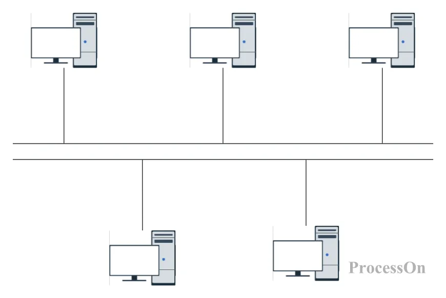
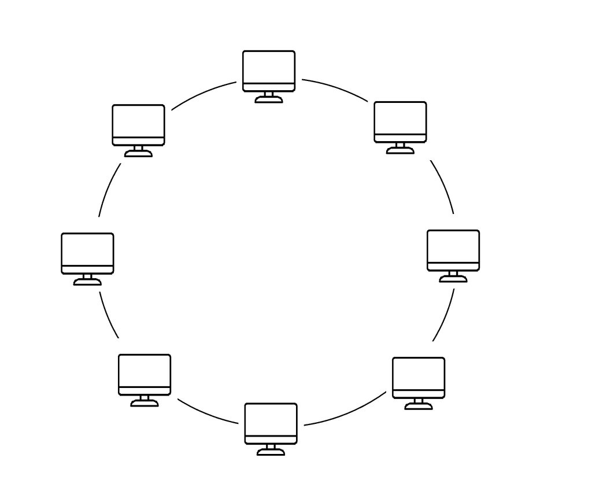
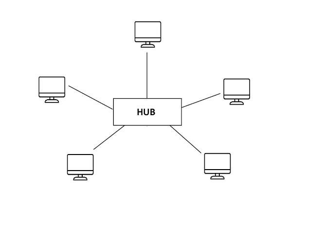
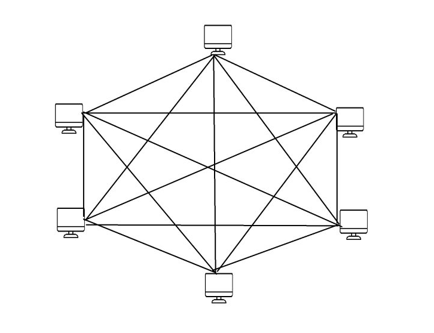

Topologia de Rede
O que são Topologia de Redes?
A disposição de nós e links é chamada de topologia de rede. Eles podem ser configurados de maneiras diferentes para obter resultados distintos. Alguns tipos de topologias de rede são:
Topologia de Barramento
Cada nó está vinculado a apenas um outro nó. A transmissão de dados pelas conexões de rede ocorre em uma direção.

Topologia em anel
Cada nó está vinculado a dois outros nós, formando um anel. Os dados podem fluir bidirecionalmente. No entanto, a falha de um único nó pode desativar toda a rede.

Topologia em estrela
Um nó de servidor central está vinculado a vários dispositivos de rede do cliente. Essa topologia tem melhor performance, pois os dados não precisam passar por cada nó. Eles também são mais confiáveis.

Topologia em malha
Cada nó está conectado a muitos outros nós. Em uma topologia em malha completa, cada nó está conectado a todos os outros nós da rede.
